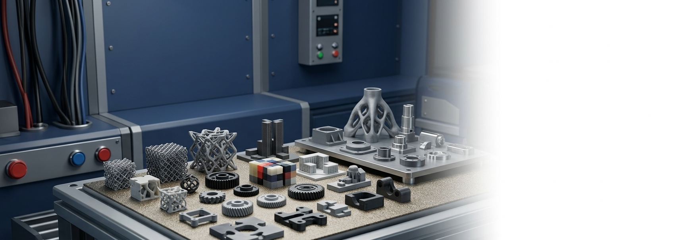
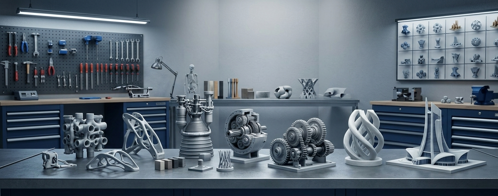

Recreación de Piezas Rotas y Descontinuadas
¿Tienes una máquina industrial, un electrodoméstico, un vehículo o una herramienta inservible solo porque se quebró un pequeño engranaje o soporte plástico que ya no se comercializa?
En AIMPRIMIR3D tomamos la pieza rota, medimos sus tolerancias con calibradores de precisión e investigamos las cargas a las que está sometida. La modelamos tridimensionalmente en software CAD y la fabricamos en un material igual o superior al original.
- No requieres tener planos ni conocimientos técnicos.
- Refuerzo en zonas críticas de fractura frecuente.
- Entrega rápida para que tu negocio o equipo no siga detenido.

Impresión 3D Industrial y de Alta Precisión
Contamos con dos líneas tecnológicas principales para cubrir cualquier requerimiento técnico:
FDM (Modelado por Deposición Fundida)
Ideal para piezas de volumen medio y grande, componentes mecánicos, soportes y carcasas con gran tenacidad y resistencia térmica.
Resina UV (Estereolitografía SLA/LCD)
Para réplicas de máxima fidelidad, figuras de colección, moldes de joyería o componentes con geometrías microscópicas lisas al tacto.

Prototipado Funcional y Validación
Acompañamos a inventores, ingenieros y estudiantes universitarios a pasar del boceto al producto tangible en tiempo récord.
Valida si los tornillos calzan, si la electrónica queda bien ventilada y si el usuario puede sostener el producto cómodamente antes de comprometer dinero en moldes de inyección tradicionales.
Cotizar Mi Prototipo